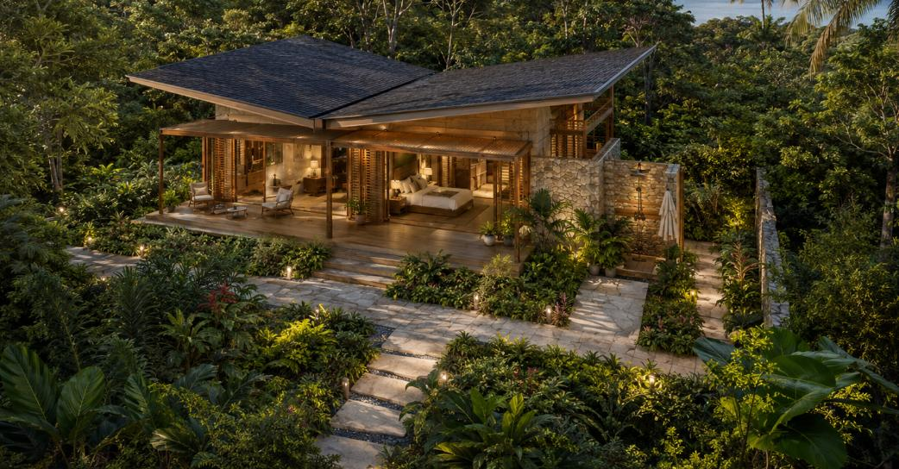
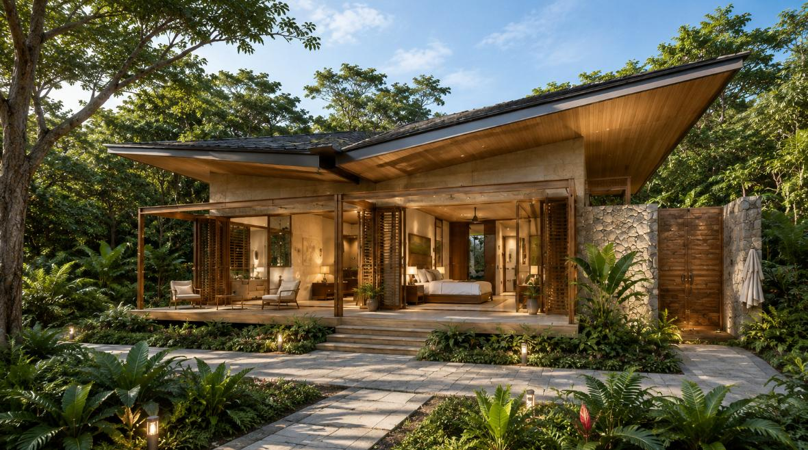
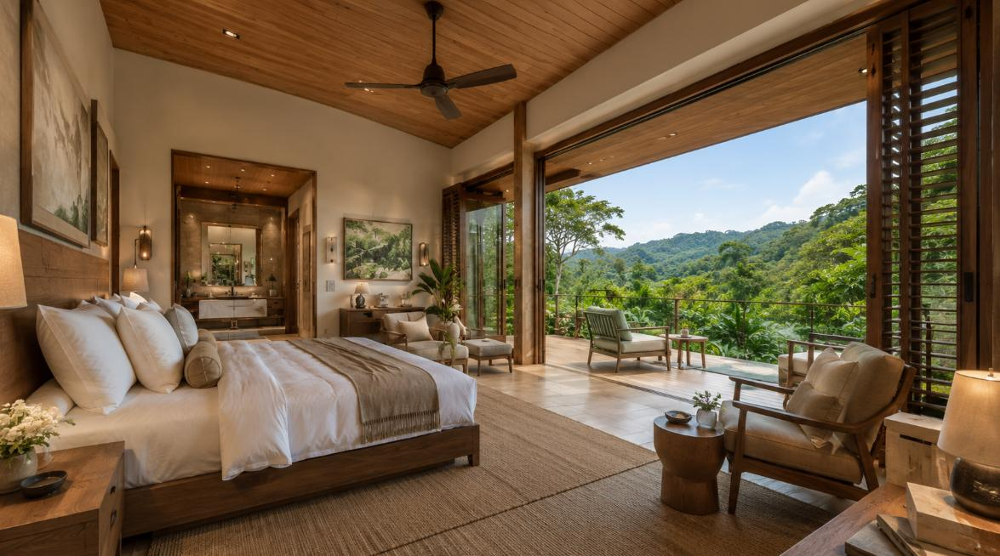
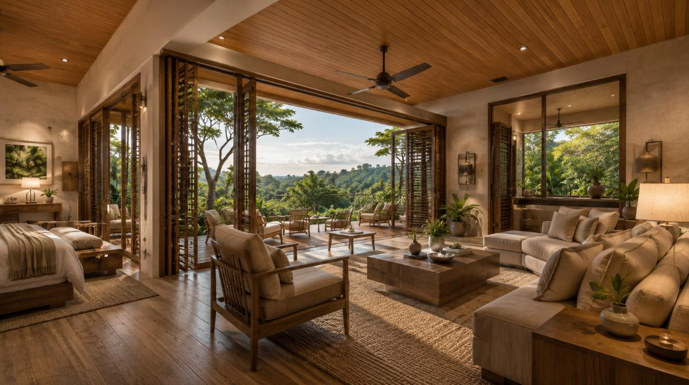
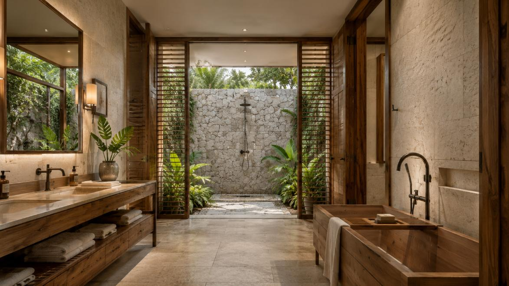
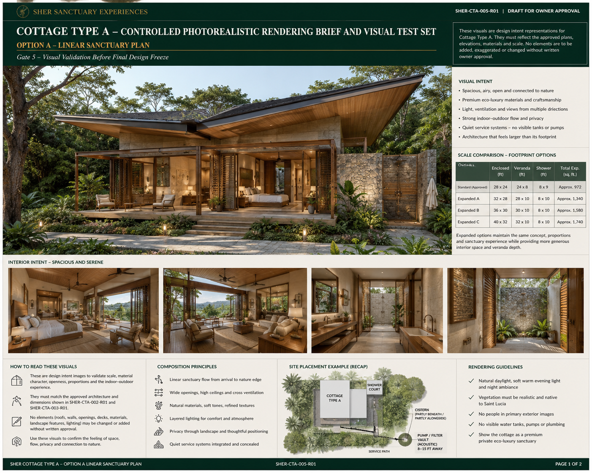

| Option | Enclosed (ft) | Veranda (ft) | Shower (ft) | Total (sq ft) |
|---|---|---|---|---|
| Standard ✓ | 28 × 24 | 24 × 8 | 8 × 9 | ~972 |
| Expanded A | 32 × 28 | 28 × 10 | 8 × 10 | ~1,340 |
| Expanded B | 36 × 30 | 30 × 10 | 8 × 10 | ~1,580 |
| Expanded C | 40 × 32 | 32 × 10 | 8 × 10 | ~1,740 |
Bold row is the approved standard build. Expanded options maintain the same concept, proportions and sanctuary experience while providing more generous interior space and veranda depth.
